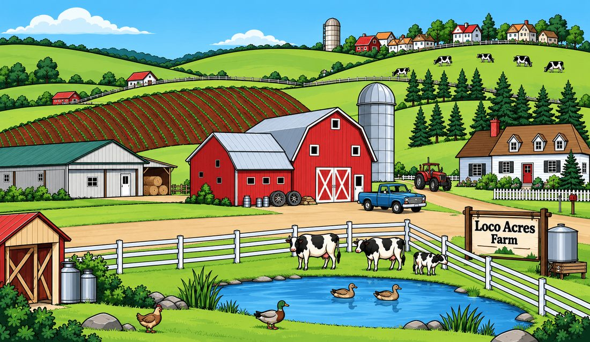
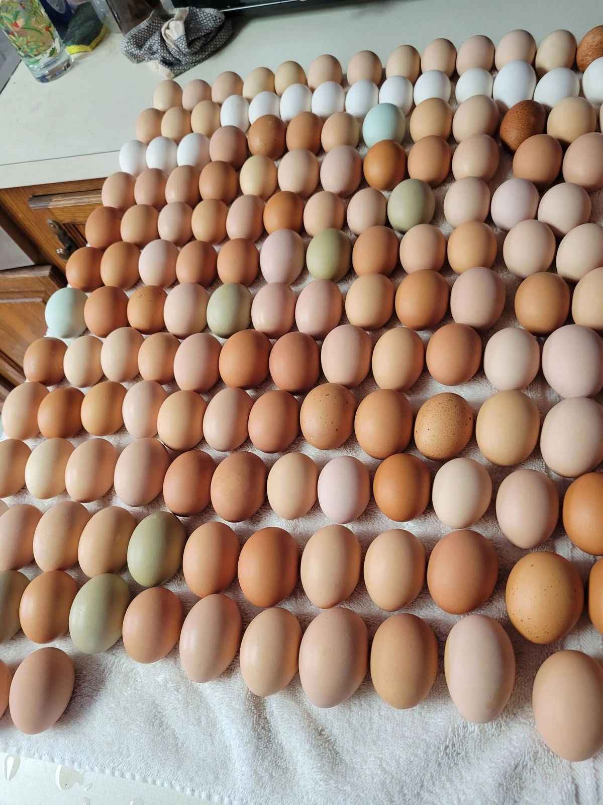
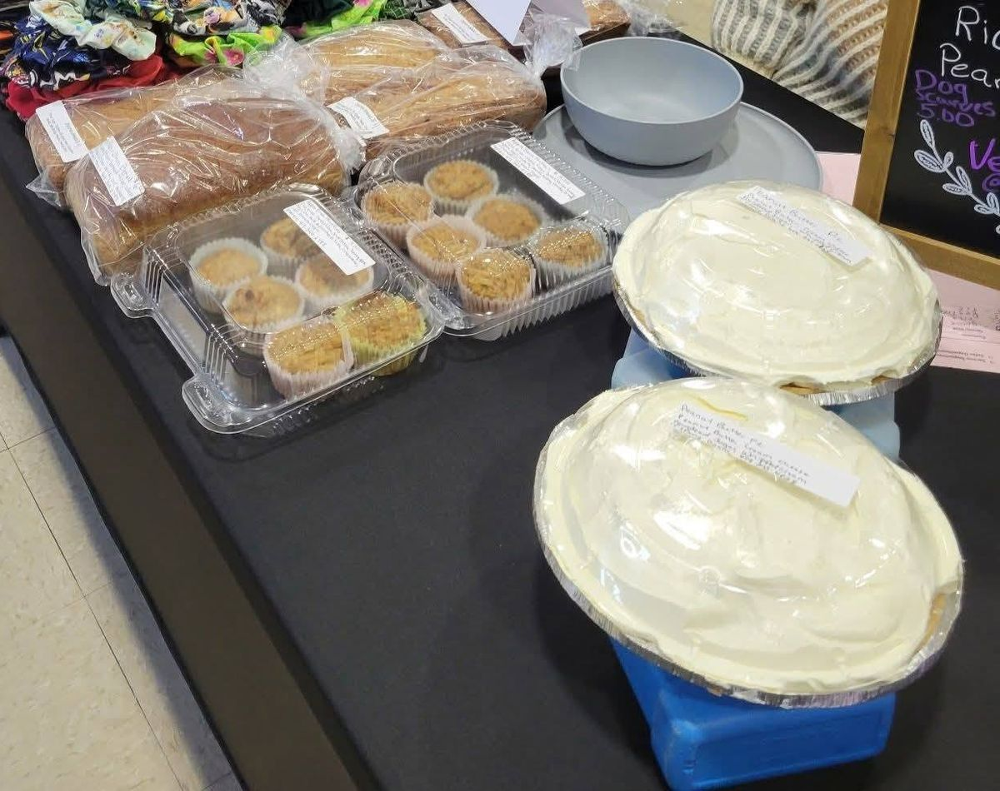
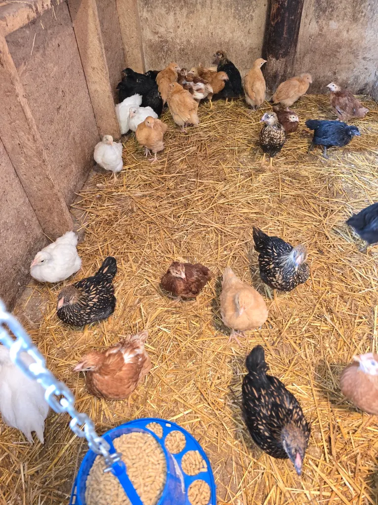

Loco Acres Farm — family farm in Millbury, Ohio
Loco Acres Farm is Joe & Margie Kill's family farm on Woodville Road in Millbury, Ohio, minutes from Toledo, Oregon and Perrysburg. Farm fresh eggs, raw unfiltered honey from our own hives, poultry raised here, beef raised locally with family, live chickens for your own flock, and fresh Thanksgiving turkeys by preorder.
Joe & Margie Kill · 1760 Woodville Rd, Millbury, OH 43447 · 419-917-1706 · 419-349-2788

What's available
What's available right now
Stock changes with the seasons and the flock, and prices follow the market — call for today's availability and pricing. Local pickup only.
Honey & eggs
- Raw, unfiltered local honey
- Chicken eggs
- Duck eggs spring–mid summer
- Turkey eggs spring–mid summer
- Goose eggs spring–mid summer
Duck, turkey and goose eggs are primarily available spring through mid summer.
Freezer meats
- Beef
- Turkey
- Chicken
- Pork chops
- Gunpowder bacon
From the kitchen
- Homemade pies some seasonal
- Cookies
- Jams & jellies
Waterfowl
- Duck
- Goose
For your homestead
- Chickens
- Turkeys
- Ducks
- Geese
From our hives
Raw, unfiltered, truly local honey.
Our honey goes from the hive to the jar and nowhere in between — never heated, never filtered, so it keeps all the pollen, enzymes, and flavor of the fields the bees actually worked.
Local honey means local blooms. Every jar tastes like this corner of Wood County, and no two seasons are quite the same.



Fresh daily
Four kinds of eggs, one family farm.
Most stands stop at chicken eggs. Ours is where bakers come for rich duck eggs, and the curious come to try a turkey egg or crack a single goose egg into the pan for breakfast.
Chicken eggs always available. Duck, goose and turkey eggs are seasonal. All of them gathered from birds that spend their days scratching, foraging, and dabbling around the farm.
Farm to freezer
Freezer meats in stock: beef, pork, turkey and chicken.
Our turkey and chicken are raised right here, and our beef is raised about 10 miles away in a partnership with Margie's cousins, so we know exactly how it's raised and fed. We also carry pork chops and our best-selling gunpowder bacon. Duck and goose come in smaller numbers, so we sell those by preorder to make sure every bird finds its table.
Tell us what you're planning and we'll set it aside. A quick call is all it takes to reserve.


From the farm kitchen
Homemade pies, cookies and jams
Our pies and cookies are baked by preorder: call ahead and we'll tell you when to pick up. Most are available year round, with seasonal pies like elderberry, raspberry and gooseberry when the fruit is ready. Jams and jellies are made all year. You'll also find our baked goods at craft shows, bake sales, farmers markets and flea markets.
Our most popular jam is peach habanero, followed by strawberry habanero, strawberry, peach, and strawberry jalapeño.

Start your own flock
Live poultry, straight from our barn.
We sell live chickens, turkeys, ducks, and geese — healthy birds raised on straw and fresh air, in more breeds and colors than you'll find at a feed store. Whether you want three laying hens for the backyard or a breeding trio of geese, come pick your birds in person.
Every bird here is raised by Joe and Margie Kill — a family farm in the truest sense, and it shows in the animals.
Thanksgiving & Christmas
Fresh Thanksgiving turkeys, geese & ducks
Every year, our fresh holiday turkeys, geese and ducks are spoken for long before the holidays arrive. Thanksgiving orders close November 20, and we always sell out.

4.8 stars from 37 Google reviews
What our customers say
“The juiciest turkey we have ever had.”
“We have gotten fresh turkeys just days before Thanksgiving a few years now. We had 20+ for dinner and everyone could not get over how delicious the turkey was.”
Joshua E., Google review
“Everything is perfect.”
“The steak was delicious, the raw honey was delicious, everything is perfect. I 100% recommend Loco Acres Farm. The owners are really nice too.”
Alex P., Google review
“Customer service is awesome.”
“Order a goose for Thanksgiving, it was excellent. Customer service is awesome, and the quality of the meat was great.”
Wakeso P., Google review
Ordering & payment
Order from anywhere. Pick up at the farm.
We take orders from anywhere, but everything is local pickup only — no shipping. Prices follow the market, so call for today's prices. We accept all major credit cards, plus the apps you already use.

 Credit cards
Cash App
Credit cards
Cash App
Farm hours
Open seven days a week.
We're here 10 am to 5 pm every day of the week — including most holidays. Hours might differ on holidays, so call ahead if you're making a special trip.
Open Labor Day (Monday) 10 am – 5 pm — holiday hours may differ.
| Monday | 10 am – 5 pm |
|---|---|
| Tuesday | 10 am – 5 pm |
| Wednesday | 10 am – 5 pm |
| Thursday | 10 am – 5 pm |
| Friday | 10 am – 5 pm |
| Saturday | 10 am – 5 pm |
| Sunday | 10 am – 5 pm |
Come on out